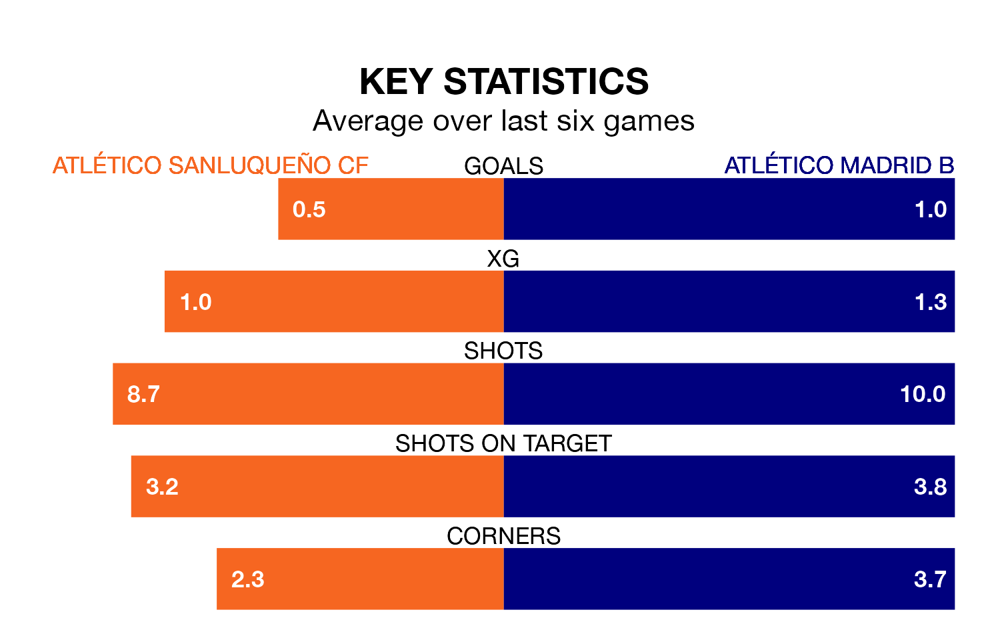

Atlético Sanluqueño CF host Atlético Madrid B on Sunday at the Estadio El Palmar in Primera Division RFEF Group 2.
In their last league match, on March 31, Atlético Sanluqueño drew with UD Melilla 1-1 away, with their goal scored by Jorge Andújar Moreno.
Atlético Madrid B won, 2-1 at home against Intercity, with Adrián Niño Heredia (two) scoring their goals.
With 43 goals in 30 games so far this season, Atlético Madrid B are scoring more than average in the league with 1.4 goals per game. But they are conceding more than average too, letting in 38 goals at a rate of 1.3 per game.
Atlético Sanluqueño, meanwhile, are below average scorers, with 1.0 goal per game, compared to a league average of 1.1. They have conceded 1.1 goals per game.
The home side are in disappointing form in Primera Division RFEF Group 2, with one win and three draws from their last six games.
With two wins and three draws over that period, the visitors' form is better – they have taken nine points from 18, compared to Atlético Sanluqueño's six.
In Francisco Mwepu, Atlético Sanluqueño have one of the league's most on-form strikers so far this season. He has notched seven goals in 21 appearances, to sit sixth in the scoring charts.
Atlético Madrid B's top scorer, with seven goals in 21 games, is Diego Vicente Bri Carrazoni.
The hosts are 14th in the table after 30 games, of which they have won eight and drawn 11, earning 35 points.
Atlético Madrid B are two places ahead of Atlético Sanluqueño in 12th, with nine wins and 12 draws putting them on 39 points.
Updated: 16:41 (UTC), 04/04/24